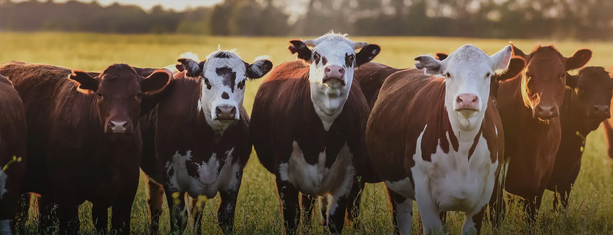
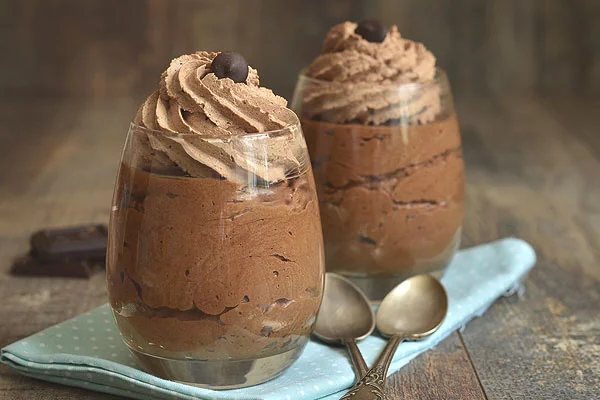
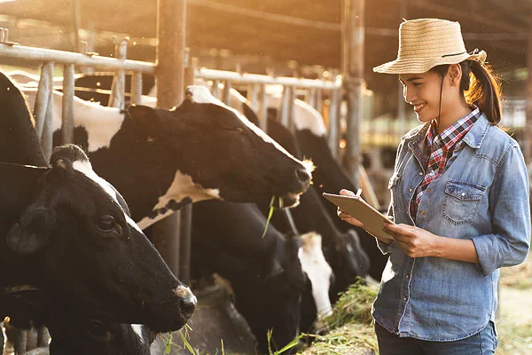
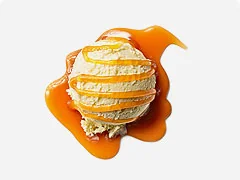
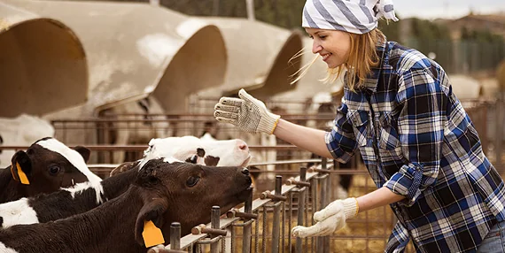
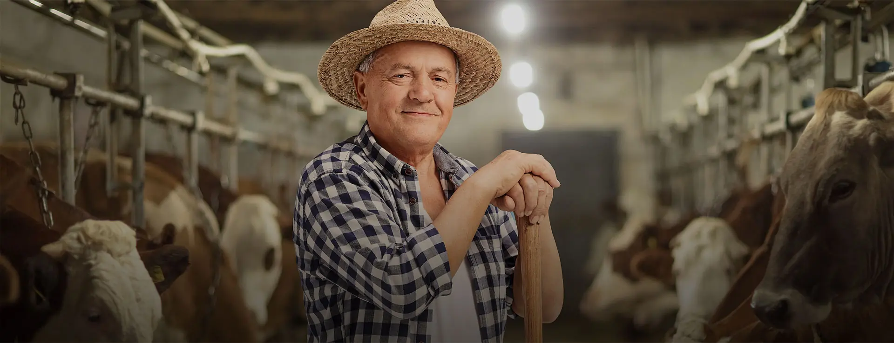
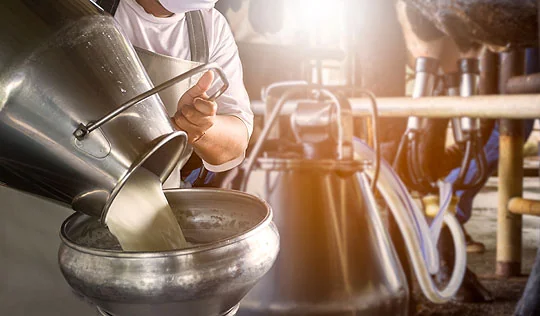

Stackly, Chinna Tirupathi,
Salem, Tamil Nadu.

Editor's Deep DiveAn investigative look at how rotational multi-species clover grazing sequesters 3.2 tons of carbon per acre while producing the highest butterfat percentages and gentle A2 beta-casein proteins in American dairy.

45 MinsHow high-butterfat pasture butter creates an airy, feather-light crumb structure with a deeply caramelized golden crust.

20 MinsA silky Italian chilled dessert naturally sweetened with unprocessed comb honey and infused with crushed Madagascar vanilla beans.

35 MinsRich, velvety baked custard showcasing the delicate sweet natural creaminess of pasture-grazed whole milk without heavy sugar.
Exploring the molecular difference between heritage Jersey A2 beta-casein and commercial A1 milk with clinical gastroenterologist Dr. Robert Hall.
Master Herdsman Mark Henry takes us through dawn milking, observing cow herd dynamics, and winter feeding on fermented clover silage.
How inert glass packaging preserves pristine farm flavor, prevents microplastic leaching, and powers our circular zero-waste porch delivery system.


